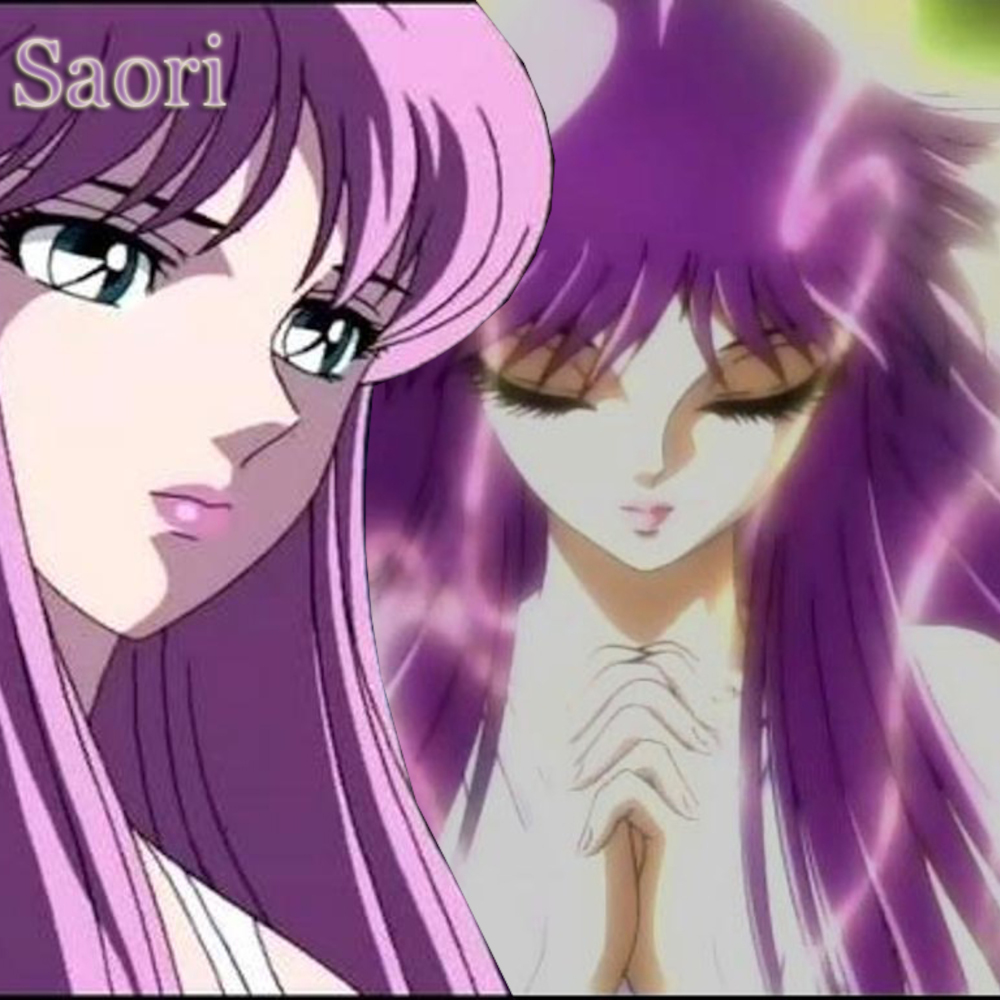

O desafio proposto foi criar um site que apresente uma imagem flexível, que mude conforme as proporções e efeitos de flexibilização da janela do navegador. Para isso, irei utilizar as tags: <picture>, <img> e <source>
Saori Kido é a reencarnação da deusa Atena no anime e mangá Os Cavaleiros do Zodíaco. Criada no Japão como neta adotiva do bilionário Mitsumasa Kido, ela descobre sua natureza divina na juventude e assume o fardo de liderar Seiya e os Cavaleiros de Bronze na proteção da Terra. É a figura central da obra, conhecida por seu amor incondicional pela humanidade e por se sacrificar constantemente para salvar o mundo de divindades malignas.
